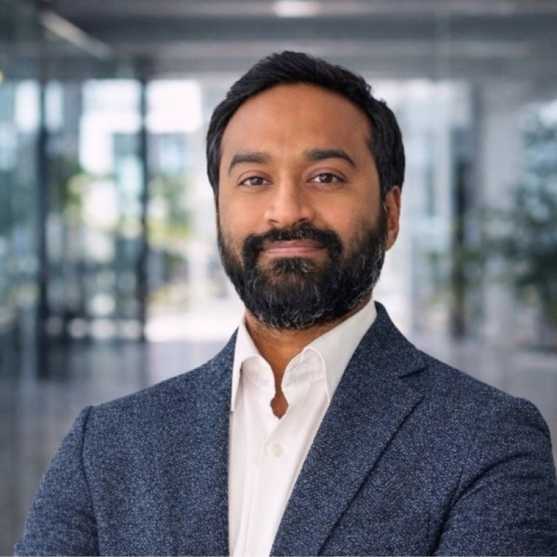

Nathan Kallus
Assistant Professor of Medical AI
Cornell University
The First Workshop on
Reliable Clinical Trial Simulation and Intervention-Aware Reasoning
WMHS @ NeurIPS 2026
Organised by researchers from


Invited Speakers
Assistant Professor of Medical AI
Cornell University
Senior Fellow in Clinical Foundation Models
UCL / NHS Foresight
Speaker to be confirmed
GSK
Speaker to be confirmed
TBC
Speaker to be confirmed
TBC
Speaker to be confirmed
TBC
Panel Discussion
A synthesis of technical and translational themes: reliability standards, data access, benchmarks, and responsible use in high-stakes health.
VP Machine Learning
IQVIA
Moderator

Head of Data Science
AstraZeneca
Assistant Professor of Computer Science
UC San Diego
Panelist to be confirmed
TBC
Panelist to be confirmed
TBC
Panelist to be confirmed
TBC
Program
A full-day program balancing invited talks, contributed orals, posters, structured discussion, and a closing panel.
Motivation, workshop objectives, and overview of the day.
Speaker to be confirmed.
Proposed speaker: Nathan Kallus.
Informal discussion and networking.
Patient world models, virtual trial arms, synthetic controls, EHR foundation models, and trajectory generation.
Speaker to be confirmed.
Informal networking.
Speaker to be confirmed.
Accepted papers and interaction across machine learning, clinical research, causal inference, and industry.
Moderated by Jay Nanavati. Discussion of historical trial emulation, synthetic controls, uncertainty, causal validity, generalisation, and clinical utility.
Informal discussion and networking.
Reasoning, protocol interpretation, benchmark design, evaluation, and agentic systems for clinical-trial design and evidence generation.
Speaker to be confirmed from GSK.
Moderated by Raja Shankar. Discussion of trustworthiness, reliability standards, data access, benchmarking, regulatory evidence, and responsible deployment.
Presentation of the Best Paper Award, key conclusions, open research problems, community roadmap, and plans for the post-workshop report.
We invite submissions that advance reliable, intervention-aware patient world models for clinical trial simulation and high-stakes health.
Topics of Interest
Open Problems
Represent patient histories as temporal clinical states; move from observed-care prediction to intervention simulation; incorporate mechanisms of action, biomarkers, and patient heterogeneity.
Quantify uncertainty, ambiguity, shift, and abstention when confident errors are dangerous — and define reliability standards for when simulations can inform trial design or evidence generation.
Evaluate often-unobserved counterfactuals through historical trial emulation, synthetic controls, negative controls, subgroup calibration, benchmarks, and prospective protocols.
Submissions
We invite submissions on patient world models, intervention-aware modelling, clinical trial simulation, and the evaluation and deployment of generative models in high-stakes health settings. Submissions may address any of the workshop's topic areas and may take the form of methodological research, empirical studies, benchmarks and datasets, working systems, or position and perspective papers.
Up to 9 pages, excluding references and appendices.
Full papers should present a complete and self-contained contribution. Appropriate submissions include new methodological approaches, substantive empirical studies, benchmarks, datasets, evaluation frameworks, and detailed analyses of deployed or clinically grounded systems.
A full paper should clearly state the problem being addressed, describe the proposed approach, and provide evidence supporting its central claims. Depending on the nature of the contribution, this evidence may include controlled experiments, comparisons with appropriate baselines, ablation studies, validation on held-out or external data, simulation studies, clinical case studies, or systematic analyses of model behaviour.
Full papers do not need to match the breadth of a NeurIPS main-conference paper, but their principal claims must be adequately supported.
Reviewers will assess:
Up to 4 pages, excluding references and appendices.
Extended abstracts provide a venue for focused contributions, preliminary but substantiated findings, emerging research directions, negative results, working demonstrations, and well-grounded position papers.
Extended abstracts may include:
Preliminary work is welcome, but submissions should contain enough evidence or reasoning to support a concrete contribution. Purely speculative proposals without technical development, empirical evidence, or a well-grounded argument are unlikely to be accepted.
Reviewers will assess:
Authors will be asked to select the category that best describes their submission:
Position papers should advance a clear thesis, ground their argument in relevant evidence, and engage seriously with plausible counterarguments. Demonstration submissions should describe a functioning system and provide evidence that it operates as claimed, such as example outputs, screenshots, a video, usage data, or preliminary user feedback.
All accepted submissions will be presented as posters. A subset of submissions will be selected for contributed oral or spotlight presentations.
Important Dates
All deadlines are Anywhere on Earth (AoE).
Submit
We solicit non-archival submissions, including work in progress, benchmarks, negative results, position papers, and emerging directions. Submissions of work already published at major ML venues or presented in the main NeurIPS program are discouraged.
The submission portal will open closer to the deadline. Check back here or follow announcements from the organizers.
Contact organizersOrganizing Committee
Head of Advanced AI
IQVIA
Assistant Professor, CS & Laboratory Medicine & Pathobiology
University of Toronto / Vector Institute
Assistant Professor of Biomedical Informatics
Columbia University
Research Associate (PostDoc)
University of Oxford
Digital Health Applied Research
NVIDIA
Senior Director of AI/ML
GSK